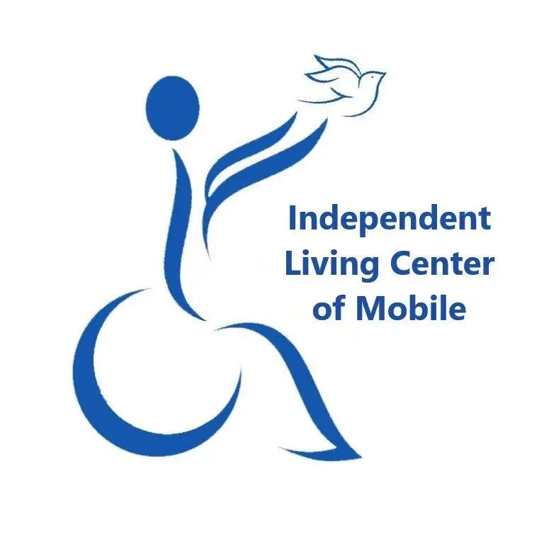

Spinal Injury Support Group in Mobile, Alabama (Free, Peer-Led)
Sponsored by:

Contact Information
Group Coordinator: Jerry Cochran Sr.
Phone: ☎ +1 (251) 391-6307
For Accommodations or Information:
Independent Living Center of Mobile
Lesia Dailey
Phone: ☎ +1 (251) 525-9638 ext. 202
Email: lesiad@ilcmobile.org
or
Cyneria Austin
Email: cyneriaa@ilcmobile.org
Additional Information:
Visit the Independent Living Center of Mobile website
Follow ILC Mobile on Facebook: